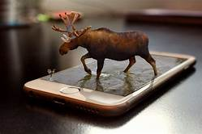

Existen diversos usos que se le pueden dar a la realidad aumentada. Hoy explicaremos los más importantes:
- La realidad aumentada en la educación superior se puede utilizar en diferentes grupos y tiene muchísimas aplicaciones como aquellas que están diseñadas para enseñanza de conceptos de ingeniería mecánica, geometría, anatomía, etc..
Usando esta tecnología los doctores pueden ver imágenes médicas sobrepuestas sobre el cuerpo de un paciente, los arquéologos pueden ver reconstrucciones de lugares históricos y los ingenieros pueden ver tutoriales virtuales sobre cómo pueden asamblar una máquina.
- Son cada vez más las agencias de publicidad que apuestan por campañas publicitarias que incluyen aplicaciones, pero también involucradas con apps de Realidad Aumentada. Las revistas o ciertos tipos de anuncios pueden imprimir códigos que se lean por medio de un dispositivo para poder visualizar la publicidad.Un ejemplo muy claro de ello es la reciente campaña de Toyota que invita a los usuarios a descargar una app de Realidad Aumentada para Android que te permite ver lo que hay bajo el capó de un coche de la marca sin necesidad de abrirlo en realidad, si no que la Realidad Aumentada te lo muestra.
- Los juegos son las apps más utilizadas de Realidad Aumentada Android. Las posibilidades que ofrece la RA en los videojuegos es enorme, nos permiten una interacción mucho mayor y una inmersión en el juego mucho más realista. Una manera de interactuar con el entorno y con el videojuego al mismo tiempo.
- Se puede convertir un smartphone en una guía turística con una simple app de Realidad Aumentada. Estas aplicaciones turísticas con RA utiizarían simplemente a cámara del dispositivo y al reconocer el lugar o monumento que enfocamos la app de RA nos aportaría un extra de información.
